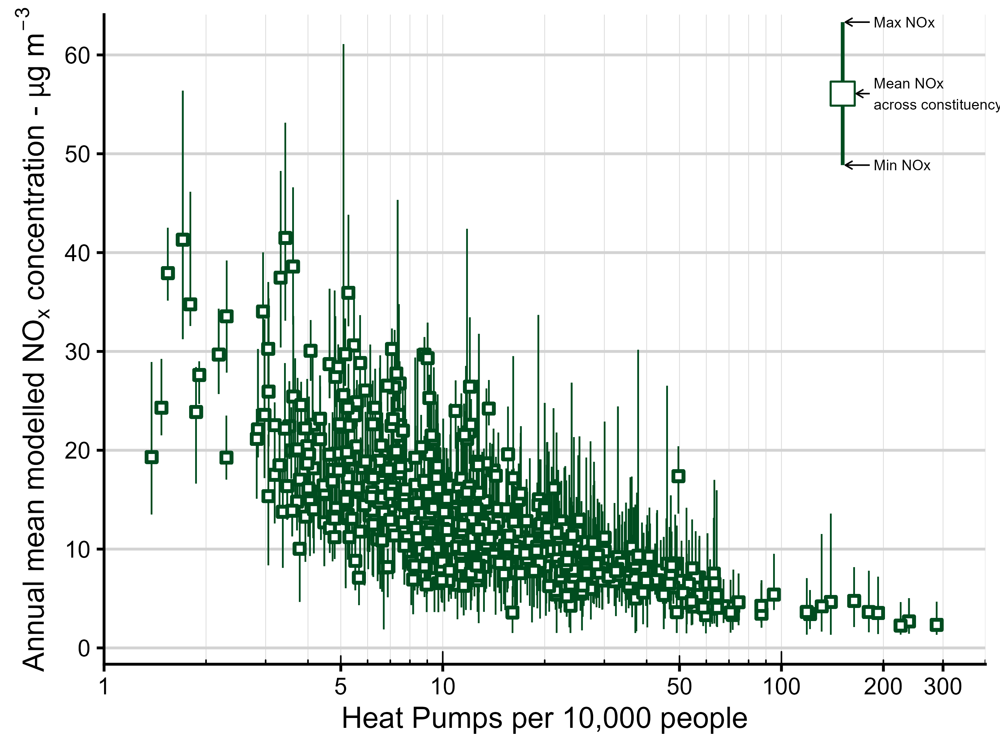
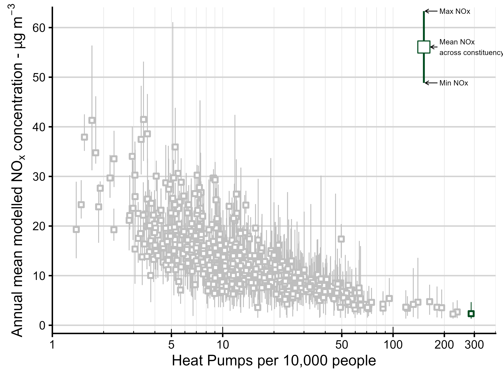
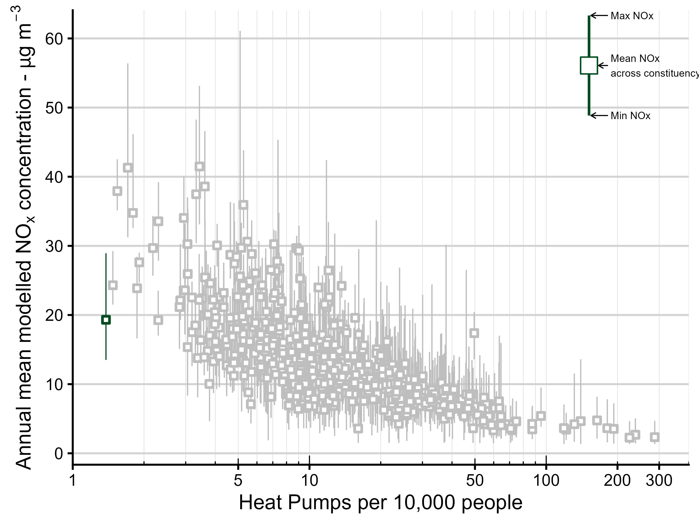
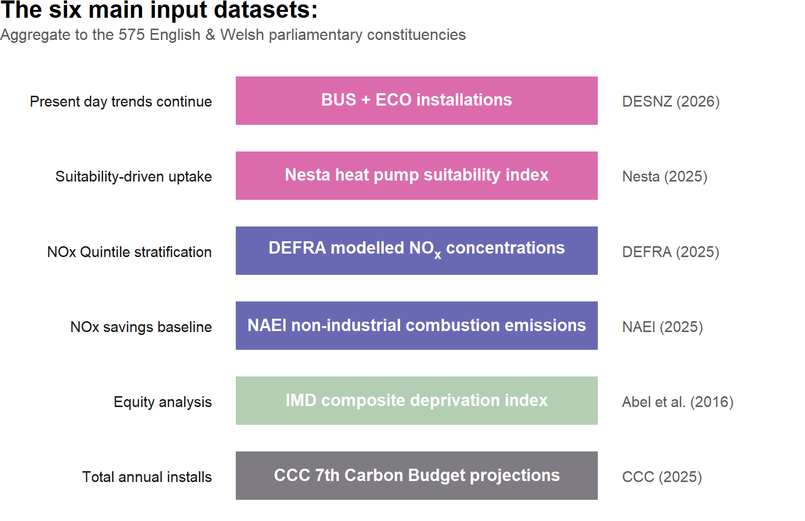
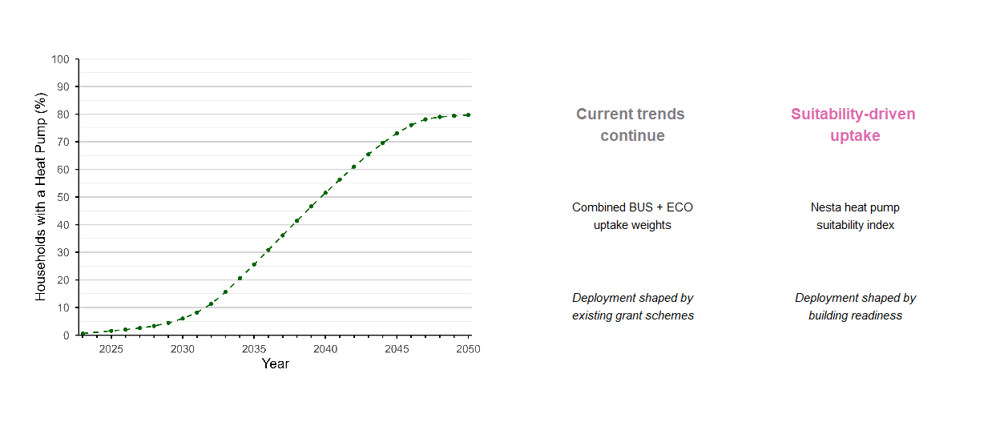
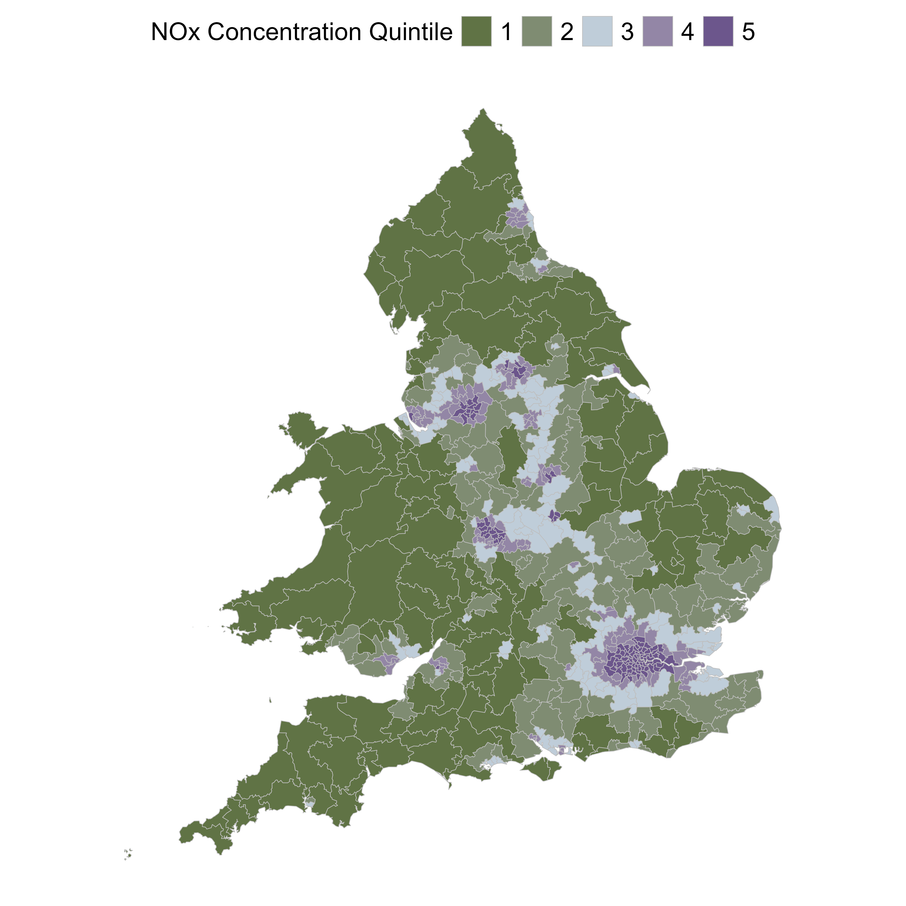

Heat Pump Adoption in the UK: Implications for Air Quality Disparities
KMS Prize Interview · 9th June 2026
Will heat pumps lead to widening air quality disparity in the UK?
- 197 kilotonnes of potential NOx savings from installing heat pumps from 2025 to 2050
- Modelling shows that current policy risks concentrating benefits in the least-polluted, least-deprived constituencies — Potential for a 77% gap in cumulative savings between the cleanest and most-polluted areas
- Implications for worsening health inequality
Lucy Webster | WACL, University of York | Manuscript in preparation, 2026
Introduction: Fair, clean air for all?
- ~43,000 deaths annually from air pollution in the UK¹.
- Unequal exposure across the population²
- Fossil fuel boilers dominate heating
- Combustion emits nitrogen oxides (NO\(_x\) - NO\(_2\) + NO)
NO2 is harmful but also plays an important role formation of secondary pollutants; The atmospheric chemistry of NO\(_x\) is complex and influences both ozone and particulate matter formation.
Where have heat pumps been installed so far?
Government support comes through two schemes: the Boiler Upgrade Scheme (BUS) — a £7,500 grant with no means-testing — and ECO4, which targets lower-income households. By 2026 these had delivered 79,000 and 36,000 installations respectively.
Plot this against the annual average NO\(_x\) concentration over the constituency. The overall picture shows a clear negative relationship — areas with more heat pumps tend to have lower NO\(_x\).
Ceredigion Preseli, a rural constituency in Wales, has the most heat pumps per capita with 287 per 10,000 people.
In contrast, there are only 1.4 heat pumps per 10,000 people in Liverpool Riverside.


Where will heat pumps go? — model, data and policy scenarios
The analysis draws on six spatial datasets, all aggregated to the 575 parliamentary constituencies of England and Wales (ONS July 2024 boundaries).

Produce a model to allocate the CCC 7th Carbon Budget Balanced Net Zero projections — the pathway reflecting effective and feasible decarbonisation options — across constituencies each year from 2025 to 2050.
Two scenarios explore the consequences of policy choice. The total number of heat pumps installed each year is fixed. The only difference is where they go.
We can do this by asigning each constituency a relative probability of adoption based on either the number of heat pumps installed so far - (Current trends continue) - or the relative suitability for a heat pump (Suitability-driven uptake)

Heat pumps are allocated to constituencies each year by drawing from a multinomial distribution, with probabilities proportional to each constituency’s policy weight and its remaining market capacity.
Allocation formula
For year \(t\), draw \(H_t\) installations from:
\[H_{i,t} \;\sim\; \operatorname{Multinomial} \!\bigl(H_t,\;\mathbf{p}_t\bigr)\]
where the probability for constituency \(i\) is:
\[p_{i,t} \;=\; \frac{w_i \;\cdot\; \bigl(N_{i,t} - C_{i,t-1}\bigr)^{\!+}}{\displaystyle\sum_{j=1}^{575} w_j \;\cdot\; \bigl(N_{j,t} - C_{j,t-1}\bigr)^{\!+}}\]
| Symbol | Meaning |
|---|---|
| \(H_t\) | National total installations in year \(t\) (Climate Change Committee) |
| \(w_i\) | Scenario weight — BUS+ECO uptake or suitability score |
| \(N_{i,t}\) | Projected households in constituency \(i\) at year \(t\) |
| \(C_{i,t-1}\) | Cumulative installations to end of \(t-1\) |
| \((\cdot)^+\) | Soft-saturation cap (max 85% household uptake) |
We assume that each heat pump installation displaces a natural gas boiler. The annual NOx saving per installation is derived from the Eco-Design Directive emission limit and Ofgem median gas consumption:
We can also calculate the cumulative emissions savings across a constituency. This really helps to show the benefits that early adopters get.
NOx saving per installation
\[\Delta\text{NOx}_{\text{install}} \;=\; \underbrace{56\;\text{mg kWh}^{-1}}_{\substack{\text{Eco-Design}\\\text{limit}}} \;\times\; \underbrace{11{,}500\;\text{kWh yr}^{-1}}_{\substack{\text{median annual}\\\text{gas consumption}}} \;=\; \boxed{644\;\text{g yr}^{-1}}\]
Constituency-level NO\(_x\) saving in year \(t\):
\[\Delta\text{NOx}_{i,t} \;=\; H_{i,t} \;\times\; 644\;\text{g yr}^{-1}\]
Cumulative saving 2025–2050:
\[\text{NOx}_i^{\text{saved}} \;=\; \sum_{t=2025}^{2050} \Delta\text{NOx}_{i,t}\]
Avoided damage costs translate the NOx savings into economic terms and is frequently used by policy makers. Damage cost rates vary by location — a tonne of NOx avoided in a city is worth more than one avoided in the countryside, because more people breathe the air.
\(c_i\) is derived from UK Treasury Green Book estimates for three geographic categories (London, Urban, Rural) mapped to each constituency via population-weighted rural–urban classification shares.
Damage costs avoided, 2025–2050
\[D_i \;=\; \sum_{t=2025}^{2050} \frac{\Delta\text{NOx}_{i,t} \;\times\; c_i}{(1 + r)^{t - 2025}}\]
| Symbol | Meaning |
|---|---|
| \(c_i\) | Constituency-specific damage cost (£ per tonne NOx) |
| \(r\) | HM Treasury discount rate (−1.5% yr⁻¹) |
Constituency-level NOx concentrations were derived as population-weighted means of DEFRA’s 1 km² modelled background grid. The population-weighted median IMD rank was used to assign deprivation quintiles, ensuring each quintile contains roughly equal numbers of residents rather than equal numbers of constituencies:
\[\bar{x}_i = \frac{\displaystyle\sum_{j \in i} \, p_j \, x_j}{\displaystyle\sum_{j \in i} \, p_j}\] where \(x_j\) is the value (concentration or IMD score) in grid cell \(j\), and \(p_j\) is its population.

Results
Replacing gas boilers in line with the CCC Balanced Net Zero pathway would deliver a cumulative 197 kilotonnes of NOx savings across England and Wales by 2050 — roughly 20% of the UK’s total annual NOx budget. That is a substantial public health prize. The question is who collects it.
197 kilotonnes
of NOx abated,
England & Wales, 2025–2050
£4.8 Billion
Potential damage cost savings
1.9 to 1.7
Reduction in the ratio of average NOx emissions intensity
most deprived vs least deprived, 2025 and 2050
Under current policy, annual installations in the least-polluted quintile (Q1) peak at 470,000 by 2034 — a full decade ahead of Q5, where peak installations of 390,000 are not reached until 2044. This lag means the cleanest areas bank clean-air benefits early, compounding the advantages.
Under current policy, annual installations in the least-polluted quintile (Q1) peak at 470,000 by 2034 — a full decade ahead of Q5, where peak installations of 390,000 are not reached until 2044. This lag means the cleanest areas bank clean-air benefits early, compounding the advantages.
TLDR…
Geographic distribution of heat pump installations under current UK policy schemes risks compounding existing inequalities in air pollution exposure. Modelling installations to 2050 shows that under current policies there would be cumulative NO\(_x\) emission savings that are 77% greater in the least polluted areas compared to the most, and 42% greater in the least deprived areas compared to the most deprived. A suitability-driven deployment scenario narrows, but does not eliminate, such inequalities.
Lucy Webster · University of York · lucy.webster@york.ac.uk
Paper in preparation · GitHub: https://github.com/lucy-web-0812/heat_pumps_AQ
Supervisors: Prof Alastair C. Lewis · Dr Sarah J. Moller · University of York
Funded by NERC PhD programme · National Centre for Atmospheric Science